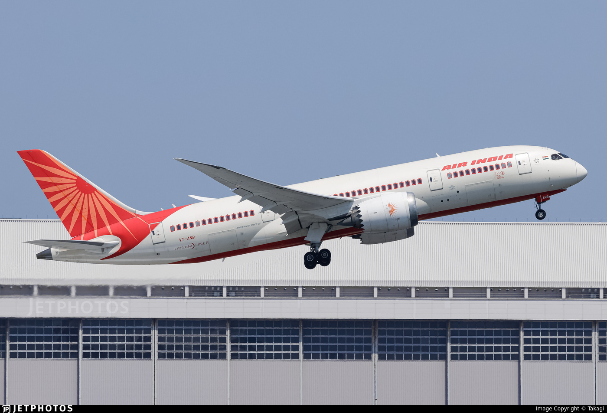

Air India Flight AI171 Crash - Initial Analysis
Background
In the afternoon, around 8:08 UTC, of June 12, 2015, Air India flight AI171 crashed shortly after taking off from Ahmedabad. The involved aircraft was a Boeing 787-8 Dreamliner bound for London Gatwick. Based on the flight data from Flightradar24, it appears the aircraft climbed to an altitude of 625 ft from ground before the loss of lift was substantial enough to bring down the aircraft.
Preliminary Analysis
Before I begin, I would point out that the following analysis represents my viewpoint based on the available information as of now. Nowhere should this be taken as an actual account of the incident. My heart goes out to all the bereaved families for their irreparable loss.
I'm mentioning the standard take-off procedure below as it will help in connecting the dots. Let's start by dividing the take-off procedure into 3 steps for the purpose of explanation:
- Take-off roll: Portion of takeoff when an aircraft accelerates from standstill to take-off speed—sufficient speed at which enough lift is produced to be airborne for a given weight.
- Lift-off: Point when the aircraft becomes airborne after increasing the Angle of Attack (AOA) by tilting the nose upwards.
- Initial Climb: Period from lift-off to a safe maneuvering altitude.
When the pilot flying pushes the throttle for take-off, both the pilot monitoring and the pilot flying monitor the airspeed. After a certain airspeed we'll hear the call V1 from the pilot monitoring, notifying that the aircraft must now continue and can't abort the take-off.
Then, as the pilot monitoring calls Vr — signifying that the aircraft has reached the rotation speed — the pilot flying pulls the yoke or the control-stick, lifting the nose.
Now, as the aircraft climbs, the pilot flying calls "gear up", and the pilot monitoring shifts the gear lever upwards, retracting the landing gear. Once a positive climb (stage 3 from above) is established, the flaps are retracted, and further procedures like thrust management, altitude leveling, and navigation follow.
Video footage of AI171 incident
From the footage available, it can be seen that just as the aircraft starts to climb, it begins to glide down—likely due to a loss of lift. Another discernable visual is that the gear hasn't been retracted. Landing gear causes disruption in airflow and increases drag. Loss of lift can result from multiple causes, ranging from power loss to aerodynamic stall.
Regarding loss of power or engine failure, I think it's safe to discount the possibility of a bird strike, as the airspace appears clear, and in the case of such strike, an engine flameout is often visible — none is seen in the video. Modern aircraft are designed to operate with even one engine, and dual engine failure is extremely rare unless caused by something like a large flock of birds (e.g., US Airways Flight 1549).
I suspect the loss of lift was due to flaps being incorrectly set, exacerbated by the failure to retract the landing gear. A similar incident occurred in my home country, Nepal, 17 months prior involving an ATR 72 aircraft (YT691), where the pilot monitoring mistook the condition lever for the flap lever, causing the propeller to feather during landing. I foresee human error of a similar kind — where the pilot pulled up the flaps instead of the landing gear — as a probable cause.
I was deeply saddened by this accident—not only because of the tragic loss of lives but also because it involved my favorite aircraft.